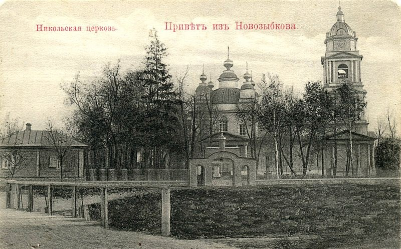
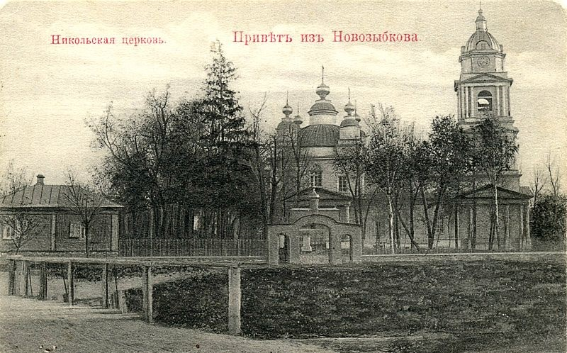
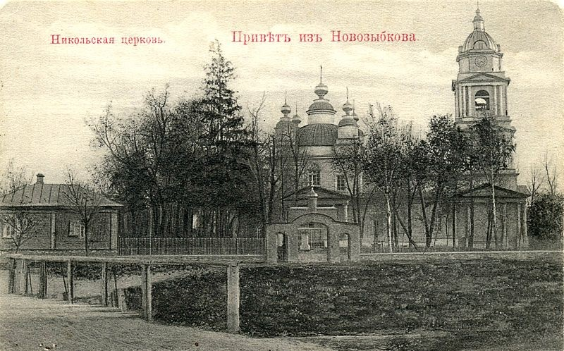
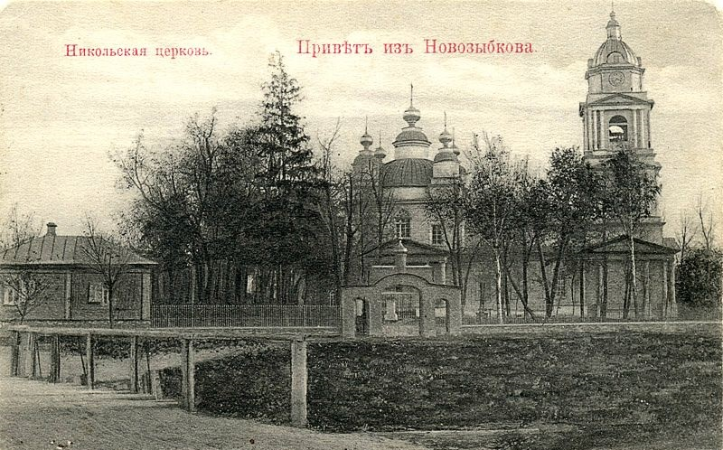

Адрес: ул. Набережная, 41
Относится к Санкт-Петербургской и Тверской епархии Русской православной старообрядческой церкви.
Церковь построена в 1774—1782 годах злынковским старообрядческим купцом Осиповым для беглоповской общины города. В 1818 году храм был полностью перестроен в стиле классицизма. В 1846 году приход перешёл в единоверие, настоятелем храма был назначен священник Александр Арсеньев из Москвы. С 1896 года действовала церковно-приходская школа. После революции храм стал принадлежать старообрядцам белокриницкого согласия. На некоторое время храм был закрыт и использовался как склад люпина, но в 1941 году церковь снова открыли. После войны для храма был рукоположен священник Феодор Щербаков. В 1959 году сгорело пятиглавое завершение храма и в конце 1960-х заменено на новое упрощённое (восстановлено в прежних формах в 2000-х). После смерти о. Феодора его сменил священник Виктор Зюзин. С 2002 года настоятелем храма является иерей Сергий Бедный.
Основу оригинальной двухъярусной объемной композиции образует прямоугольный, вытянутый в длину нижний ярус, объединяющий все части храма. Центральный четверик выделяется портиками по бокам и крупным верхним ярусом, увенчанным сферическим куполом (прежде имел низкое цилиндрическое основание) и пятью декоративными главками с крестами: меньшие по углам на четвериках-тумбах и большая над центром купола на глухом восьмерике. Первоначально главы были более крупными, с пологими кровлями и круглыми шеями и размещались на широких четвериках. Верхние суженные ярусы алтаря и трапезной с двускатными кровлями имитируют базиликальную структуру, хотя они не раскрыты в интерьер и имеют лишь ложные окна. В кровлю верхнего яруса алтаря врезан четверик с маленьким куполом и главкой. В общей композиции доминирует примыкающая с запада к трапезной высокая и стройная колокольня: три ее четверика, последовательно сокращающиеся в размерах, несут восьмерик, завершенный яйцевидным куполом с люкарнами, над которым поставлена маленькая главка.
Главным элементом убранства фасадов являются колонные портики тосканского ордера с широким средним интерколумнием и фронтонами. Они украшают боковые входы в храм, а также все четверики колокольни. Широкую арочную нишу западного входа в центре нижнего четверика колокольни фланкировали меньшие нишки между боковыми колоннами (ныне зашиты). Из других деталей классицистического убранства интересны две пары колонн с раскрепованными антаблементами и фронтончиками над ними на восточной стене алтаря. Проемы имеют скромные рамочные обрамления: прямоугольные (храм) и арочные (колокольня); часть из них ложная.